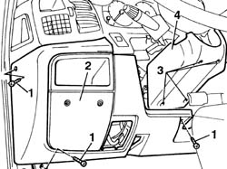
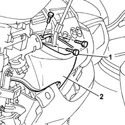
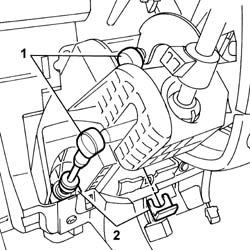
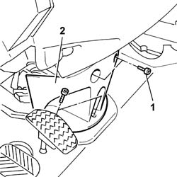
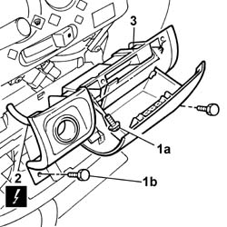
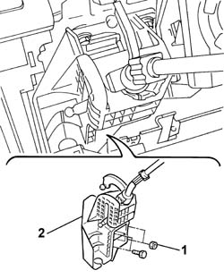

2125C32 GEARBOX HAND CONTROL SUPPORT - R.R.
- Path
- Procedures > 21 GEARBOX UNIT > 2125 MANUAL GEARBOX EXTERNAL CONTROLS > 2125C MANUAL GEARBOX EXTERNAL CONTROL (CABLES) > 2125C32 GEARBOX HAND CONTROL SUPPORT - R.R.
- Kind
- repair procedure (removal / refitting; the operation number is the code)
- Applies to
- all engines; all production periods
- Interactive page
- https://sloeber94.github.io/elrnDB-fDct/en/#/244001041
Applies to: all engines; all production periods
 Removing
Removing
 Refitting
RefittingOp. 7045A11 DRIVER'S FRONT SEAT WITH HANDBRAKE LEVER - R.R.
1. Undo the retaining bolts.
2. Remove the lower dashboard trim.
3. Undo the retaining bolts.
4. Remove the lower steering column trim.

Applies to: all engines; all production periods
Op. 2125C24 GEAR LEVER KNOB - R + R
Op. 2125C26 LEVER/KNOB COVER - R+R FOR VERSIONS WITH REVERSE ENGAGEMENT DEVICE
1. Undo the retaining bolts.
2. Remove the dashboard gear lever trim.

Applies to: all engines; all production periods
1. Using a spanner, slightly rotate and release the ends of the gear selector and engagement cables.
2. Remove the springs securing the cables to the support.

Applies to: all engines; all production periods
1. Undo the retaining bolts.
2. Remove the dashboard trim on the floor.
- Remove the two gear selector and engagement cables downwards, releasing them from the area of the support.

Applies to: all engines; all production periods
1. Open the ashtray in the dashboard and undo the upper (1a) and lower (1b) fixing bolts.
2. Disconnect the electrical connection for the cigar lighter.
Description | Connector | |
|---|---|---|
2 | Cigar lighter | P050 |
3. Remove the ashtray from the dashboard.

Applies to: all engines; all production periods
1. Undo the nuts and the bolts fixing the support to the dashboard crossmember.
2. Remove the gearbox hand control support.

Applies to: all engines; all production periods
Refitting
Removing- Fit the gearbox hand control support.
- Tighten the nuts and the bolts fixing the support to the dashboard crossmember.
- Fit the ashtray in the housing in the dashboard.
- Connect the electrical connection for the cigar lighter.
Description | Connector | |
|---|---|---|
- | Cigar lighter | P050 |
- Tighten the upper and lower fixing bolts and close the ashtray.
- Connect the ends of the cables to the gear lever support and secure them fitting the springs.
- Fit the dashboard gear lever trim.
Op. 2125C26 LEVER/KNOB COVER - R+R FOR VERSIONS WITH REVERSE ENGAGEMENT DEVICE
Op. 2125C24 GEAR LEVER KNOB - R + R
- Fit the steering column lower cover and tighten the fixing bolts.
- Fit the dashboard lower trim and tighten the fixing bolts.